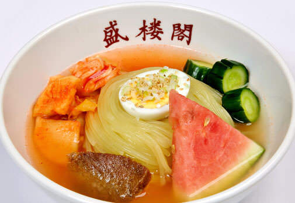
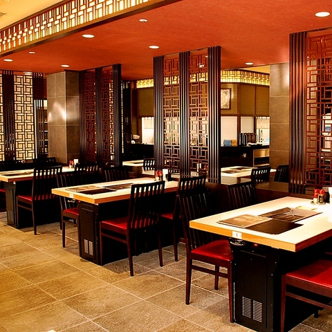

一番人気のメニュー画像

店内写真

外観写真
レビュー
私の同僚が焼肉店の盛岡冷麺の方がおいしかった気がするという話をしていたのと、ここが食べログで評価よかったのでここを訪れた。21時くらいに訪れたが六か七組ほど並んでいた。店の中に入り、一人焼肉。カルビとロースを食べるが、タレがすでについており、焼いたあとそのまま食べるとめちゃめちゃおいしい。 その後に締めとして盛岡冷麺を食べるが、麺もツルツルとしており、汁もおいしかった。盛岡冷麺といえばスイカがあるイメージだが、時期が冬なので梨が添えられていた。また冷麺というとキンキンに冷えててこの冬に食べたくないという方もいるかもしれないが、それをお店の方が考慮しているためか、キンキンに冷えてはおらず、ちょうど良い冷たさだった。
初めての盛岡冷麺 ホテルのすぐ近くの名店に夜遅かったので並ばずに入店冷麺と白金豚とビビンバを注文しました今まで食べたことのない冷麺に感動しました麺のモッチモチ感牛骨スープのクリアなおいしさキムチとキムチのスープを入れていただくと又全然違う味になり驚きと感動の体験でした白金豚も甘くて美味しい又必ず行きたいです 次の日ホテルをチェックアウトしてお店の前を通ると階段下までの大行列でびっくり。でもそれも頷けるお店 ごちそうさまでした
今日はめっちゃ寒かったんで温麺を食べたいなと思って訪問。複数で行くと肉肉頼むのでおひとり様でがいいかなと思い。 お腹減ってたんでいっちやん安い定食を注文。 米はめっちゃ美味かった❤️ 肉については味付けが濃すぎて肉を楽しむ事はできず。 米以外にキムチ、スープもうまかった。 でも…肝心の肉については❓ とりあえず100名店行ったから満足くらいかな? 温麺食べてどう思うか? 再訪で温麺で勝負かな? 安いの頼んだんでコスパは良かった❗️軽く晩御飯なら最高かも。
お店の住所など
店名：盛楼閣
住所：岩手県盛岡市盛岡駅前通15-5 (ワールドインGENプラザ 2F)
電話：019-654-8752
営業時間：11:00 〜 翌2:00
説明
岩手県・盛岡駅前にある 焼肉＆冷麺の人気店 だよ。 とくに 盛岡冷麺の名店 としてめちゃくちゃ有名！ 🍜 盛楼閣の冷麺の特徴 コシが強い 本格盛岡冷麺 牛骨ベースのすっきりスープ 辛さが選べるキムチ 味がしっかりで観光客にも地元の人にも人気 盛岡駅のすぐそばで行きやすいから、盛岡行ったらまずココ！って言われるお店だよ✨